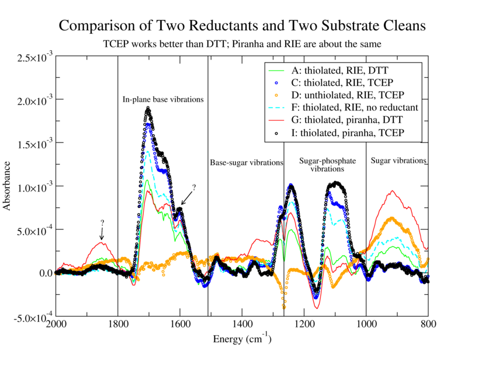

alison@exerciseforthereader.org (Alison Chaiken)
WSRCC Home Page || Up One Level
..
Establish reliable and reproducible method to attach thiolated DNA to Au. Confirm DNA attachment using FTIR and AFM. Compare reduction by DTT (Reductacryl) and TCEP and compare substrate cleaning via RIE and Piranha etch.

1. K-20 in TE: MgCl2 with Reductacryl, filtered, RIE.
2. K-20 in TE: MgCl2 with TCEP, RIE.
3. K-20 no linker in TE:NaCl with TCEP, RIE.
4. K-20 in TE:MgCl2 with no reducing agent, RIE.
5. K-20 in TE: MgCl2 with Reductacryl, filtered, Piranha.
K-20 in TE: MgCl2 with TCEP, Piranha.
1. Bring 2x 200 µL aliquots of K-20 in TE:MgCl2 and 3x 80 µL aliquots of K-20 no linker in TE:NaCl to room temperature. Thaw a 20 µL tube of 8 mM TCEP. Pipet the 3 aliquots of K-20 no linker into 1 tube. Add 3 µL of TCEP solution to each of the 3 remaining tubes, wrap in foil and rock vigorously (speed 8) for 2 hours. These tubes are for cells No. 2, 3 and 6.
2. Piranha-clean top glass (3 mins each), rinse thoroughly in DI water (5 mins) and blow-dry. Sonicate teflon o-rings in acetone and IPA, rinse in water and blow-dry. Move other DNA aliquots (3x 200 µL TE:MgCl2) from freezer to refrigerator. These tubes are for 1, 4 and 5.
3. Measure 2 units of 62 µg each of Reductacryl and place one unit in the bottom of each of two µfuge tubes (see calculation.) Label these tubes cell 1 and 5.
4. "Descum" two Au/Cr/glass slides and the three top plates using oxygen and argon plasmas in the RIE with hipress2.prc. Move other DNA aliquots from refrigerator to bench.
5. While the RIE is pumping down, vortex and spin-down DNA-containing tubes for cells No. 1 and 5 before dispensing into tubes with Reductacryl. Rock vigorously (speed 8) for 15 minutes.
6. Place the clean Au slides 1 and 2 in the test jig and assemble the teflon gaskets and glass plates on top. Mark o-ring positions on glass slide with diamond scribe and label them. Dispense solutions of cells No. 2, 3 and 4 into the cells.
7. Vortex and spin-down µfuge tube 1 before dispensing. Withdraw the solution A using a syringe and dispense through a 0.2 µm cellulose syringe filter and hypodermic needle into compartment 1.
8. Piranha-clean one slide (3 mins), rinse thoroughly (5 mins) and blow-dry. Assemble slide 3. Add solution 6. Filter solution 5 as for 1 and add to remaining cell.
9. Seal all compartments with Parafilm. Let sit overnight in a darkened, N2-backfilled cabinet.
10. Remove the parafilm, top glass and gaskets. Soak the top glass and gaskets in ddH2O. Wash the slides twice in TE:MgCl2 buffer in a pipet tip container for 10 minutes and immerse in DI water. Blow-dry one at a time as FTIR becomes available.


alison@exerciseforthereader.org
(Alison Chaiken)
WSRCC Home Page || Up One
Level
..